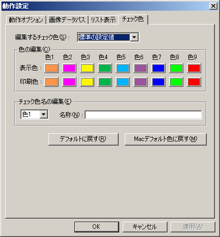

画面上でのチェック色、および印刷時のチェック色と、その名称を変更できます。
「編集するチェック色」で、設定したい項目を「標準の設定値」「現在のチェックリスト」から選択します。
「標準の設定値」は、メインメニューなどから「新規チェックリスト」を選んだ際に標準で適用される色の設定です。
「現在のチェックリスト」への設定は、現在編集中のチェックリストのみに適用され、チェックリストごとに個別に保存されます。
それぞれボタンを押すと色パレットダイアログが表示されるので、好みの色を選んでOKボタンを押してください。
各色に名称を付けたい場合は、「チェック色名の編集」のドロップダウンリストで名前を付けたい色番号を選び、右側のボックス内に名称を入力してください。
名称は半角32文字まで入力することができます。
「デフォルトに戻す」ボタンを押すと、「標準の設定値」を編集している場合はすべての色をアプリケーションのデフォルトに、名称は未設定に戻します。
「現在のチェックリスト」を編集中の場合は、「標準の設定値」に戻します。
「Macデフォルトに戻す」ボタンを押すと、「標準の設定値」を編集している場合はすべての色をMac版アプリケーションのデフォルトに、名称は未設定に戻します。
「現在のチェックリスト」を編集中の場合は、「標準の設定値」に戻します。